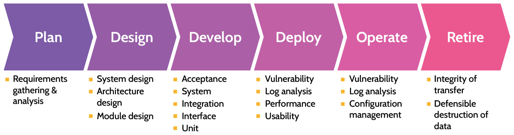
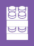
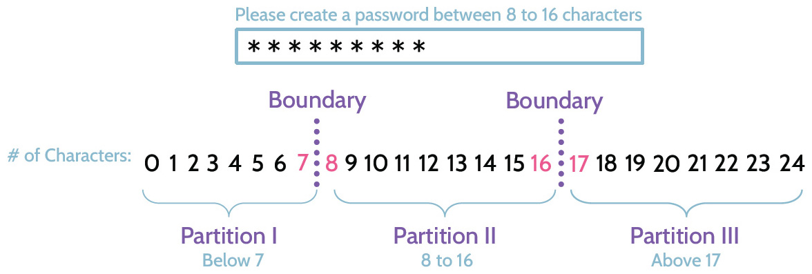
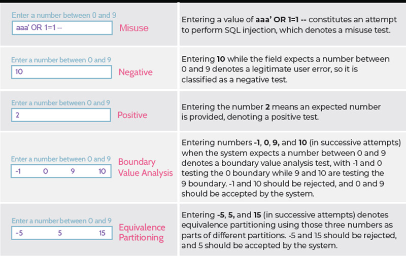
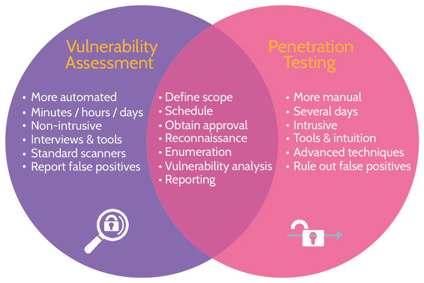
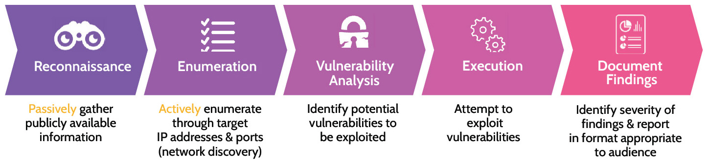
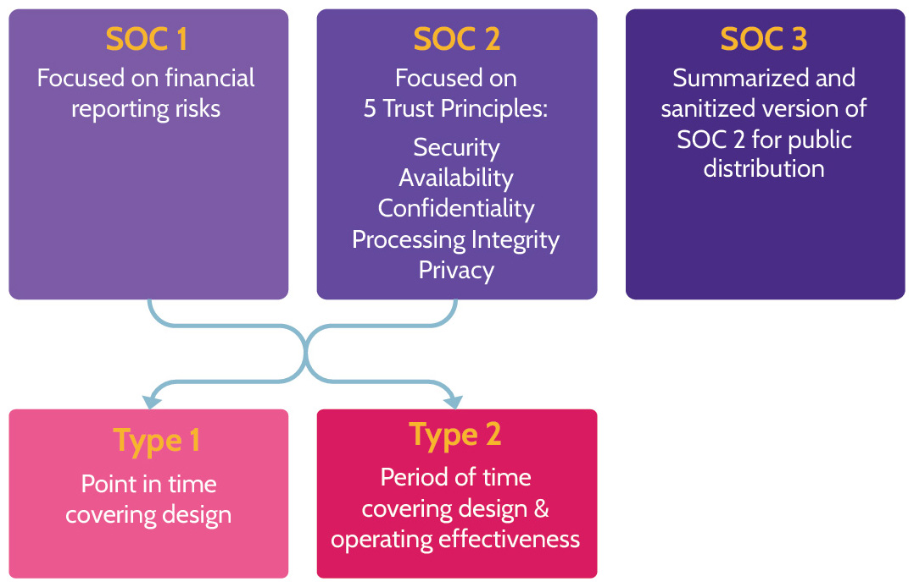

6.1 Design and validate assessment, test, and audit strategies
Purpose of Security Assessment and Testing
Domain 6 focuses on security assessment and testing of architectures, assets, and systems. Information covered in earlier domains underscored the importance of every control to address security from the perspective of the two pillars-functional and assurance-that should support every control. Security assessment and testing specifically focuses on the latter-providing assurance to stakeholders, how security is contributing to goals and objectives, and that the right level of security is built into any architecture that provides value to the organization. In other words, the purpose of security assessment and testing is to ensure that security requirements/controls are defined, tested, and operating effectively. Additionally, security assessment and testing apply to the development of new applications and systems as well as the ongoing operations, including end-of-life, related to assets.
Consider this question for a minute: How many architectures and systems do we interact with daily and simply take for granted they will work? Think about all the planes in the sky, traffic control infrastructure in a major city, computer systems, and mobile phones, to name a few examples. Though an imperfect measuring tool, the number of lines of computer code required to run and manage each of those systems can offer a glimpse as to their complexity, and some of these systems require millions or even billions of lines of code.
It is estimated that a modern operating system can contain something like fifty million lines of code. That's a massive number. Is there a chance that maybe a mistake or two exist in those fifty million lines of code? Yes, it's pretty much guaranteed that many mistakes, bugs, unknown exploits, and vulnerabilities may reside in fifty million lines of code. With each passing day, systems in use around the globe are becoming ever more complex. The more complex, the more opportunity and likelihood for errors to exist. Furthermore, not only are systems becoming more complex, but our dependence upon them is becoming more critical and pervasive, like planes using avionics systems with millions of lines of code. Most planes today can fly themselves, with very little manual intervention. However, air crashes still happen because of fatal errors. Obviously, these architectures are incredibly important, and it's imperative that they run well to ensure as much safety and order as possible. Rigorous testing and assessments must be done, and it's very important to understand that it's not just about the initial development of a system. Once deployed to production, a system should be monitored and tested consistently for a number of reasons, i.e., making sure regulatory requirements are being met. When updates to a system are made, it should be tested to ensure the updates did not break something or create vulnerabilities. Even when a system is retired, testing and assessment should be done to confirm that data has been migrated to a new system properly and has been defensibly destroyed on the old.
6.1.1 Validation and Verification
CORE CONCEPTS |
|
|

Understand validation & verification and the difference between the two
Two very important terms related to testing are: validation and verification. Both terms underscore the necessity and importance of early and ongoing testing, not simply testing after a product has been built.
Validation is the process that begins prior to an application or product being built. Validation is concerned with answering one fundamental question: Is the right product being built? From the start, it's imperative that requirements are understood and documented correctly.
Understand when verification should be performed/stopped and what helps determine the stopping point
Verification follows validation and is the process that confirms an application or product is being built correctly. Like validation, verification answers another fundamental question: Is the product being built correctly? Domain 6 focuses a significant amount of attention on testing to ensure that an application or product is functioning properly, is secure, and is meeting business requirements. Testing can never offer 100 percent confidence that an application is working perfectly. However, verification testing can be used to develop a level of confidence, and the desired level is typically directly proportional to the organizational relevance and value of the application or system. Level of confidence is another way of saying "level of care" about how well the application or product is working. A high level of confidence would be desired regarding a plane's avionics systems but not about the workings of a company wiki.
Included with verification are three terms that deserve further examination: completeness, correctness, and consistency (also known as the 3 Cs).
 Completeness means ensuring all the use cases of an application, based upon all defined requirements related to functionality, have been covered.
Completeness means ensuring all the use cases of an application, based upon all defined requirements related to functionality, have been covered.
Correctness refers to each "use" case representing what's supposed to be built.
Consistency speaks to functionality being specified consistently in all areas.
These three words capture the essence and philosophy of application and system development.
Validation and verification are summarized in Table 6-1:
|
Validation |
Verification |
|
Are we building the right product? Develop a level of confidence that business requirements are clearly understood and have been validated with the business owner. Cannot build the right product if it is not clearly understood what the owner wants. |
Are we building the product right? Develop a level of confidence that whatever is being built Is meeting all the defined requirements. The product is being built correctly based on the requirements defined during the validation stage. |
Table 6-1: Validation and Verification
6.1.2 Effort to Invest in Testing
CORE CONCEPTS |
|
|
|
|
|
How much testing is enough?
As with all things related to security in an organization, the time and effort invested in testing should be proportional to the value it represents to the organization. Value drives security, including the testing done to prove to stakeholders that security is contributing. Testing strategies flow from this value/security relationship.
Assessment, Testing, and Auditing Strategies
As noted earlier, testing strategies are used to provide assurance and can be considered from three broad contexts: internal, external, and third party. Each can be used alone or in combination, based on the type/level of assurance sought.
Internal assessment/testing/auditing (e.g., within organization control) are conducted by someone internal to the organization, in other words, by an employee.
External assessment/testing/auditing (e.g., outside organization control) can be defined in two different ways, and both should be noted.
On one hand, a company that uses a certain application, for example, Microsoft Azure, might use a team of employees to look at Azure's hosting environment, which is external to the company. So, a company essentially audits or examines the environment of an external service provider.
On the other hand, imagine a company building an application using its own development team. Internal assessment/testing/auditing has been conducted, but the company also wants independent assessment/testing/auditing performed as a means of providing objective assurance that the application is well designed and working properly. To meet this need, the company hires a major consulting firm to come in and audit the application. This consulting firm is external to the company that is building the application.
Third-party assessment/testing/auditing (e.g., outside enterprise control), as the name suggests, means three parties are involved in the process: the customer, the vendor, and then perhaps a consulting or similar company. Third-party assessment/testing/auditing is very prevalent in the context of cloud computing. For example, imagine a customer is interested in cloud computing, and they engage Amazon to provide one or more services offered by Amazon Web Services (AWS). The customer, rightly so, wants to know if AWS is secure. To provide independent and more objective assurance about the security of their services, Amazon may engage a consulting firm to come in, audit their environment and service offerings, and produce reports about their findings. Then, when a company asks Amazon about the security of their services, Amazon can point to the independently produced report to assure the customer. Thus, three parties-the consumer, the service provider, and the external auditor-make up third-party testing.
Assessment/testing/auditing strategies and the implications of each
All three strategies are depicted in Table 6-2 and can be used in combination based on the type/level of assurance sought.
|
Internal Audit |
External Audit |
Third-party Audit |
|
Testing conducted by somebody internal to the organization |
Testing via either of two scenarios:
|
Three parties are involved: customer, vendor, independent audit firm |
Table 6-2: Testing Strategies
Location
In this context, location refers to where the audit is being conducted: on-premise, in the cloud, or hybrid. This contrasts with internal, external and third-party audits, which are classed according to who is doing the auditing. Table 6-3 describes the three options in more detail.
|
On-premise |
Cloud |
Hybrid |
|
An on-premise audit focuses on evaluating security within an organization's physical facilities and data centers. |
A cloud audit focuses on evaluating the security of systems, data and applications hosted by a cloud provider. |
A hybrid audit is for hybrid infrastructures and combines both on-premise and cloud evaluations. |
Table 6-3: The Three Major Locations for an Audit
Role of Security Professional
Understand the role of a security professional
As might make sense, based upon everything written to this point, testing should include all relevant stakeholders. However, the role of security professionals is to do three things:
Identify risk
Advise testing processes to ensure risks are appropriately evaluated
Provide advice and support to stakeholders
The security team should not actually perform the testing alone; however, security should advise, provide assurance, monitor, support, and evaluate results.
6.2 Conduct security control testing
6.2.0 Testing Overview
CORE CONCEPTS |
|
|
Examples of Testing Performed
Figure 6-1 provides a high-level overview of some of the required software testing throughout the system life cycle, and Table 6-4 summarizes the testing performed at each phase. This is not an official framework and accordingly shouldn't be memorized. It is simply meant to provide an overview and highlight that testing is required during every stage of a system's life cycle from the start and throughout.

Figure 6-1: Software Testing Phases
|
Planning |
Capture related requirements to a system before any design takes place and validate the requirements have been accurately captured. |
|
Design |
The security team can provide advice on what types of controls the system should have to protect fundamental security principles, like confidentiality, integrity, and availability. Test to confirm all required controls have been included in the system design, architecture design and module, and so on. |
|
Develop |
Numerous types of testing must be performed during the development stage to confirm all the required controls are being implemented correctly: unit testing, integration testing, system testing, acceptance testing, vulnerability assessments, and so on. |
|
Deploy |
Moving an application from a quality assurance/preproduction/testing environment to the actual production environment. Numerous types of testing must be performed during deployment: usability testing, performance testing, reviewing logs for errors and anomalies, vulnerability assessments, and so on. |
|
Operate |
Configuration management reviews can be performed to ensure the product is working as intended without its security being compromised. Vulnerability management and log analysis can continue being performed for that very purpose. |
|
Retire |
Testing and ensuring that data has been migrated into the new system in a secure manner in addition to safely disposing it from the old one. |
Table 6-4: Software Testing Phases
Software Testing Overview
Most software development projects comprise multiple teams, with each team responsible for developing specific aspects of functionality that are then brought together as a complete software product. Software testing should be a comprehensive process that examines everything from the individual functional components to the integrated functional system, and the process is outlined in Table 6-5.
|
Unit Testing |
Examines and tests individual components of an application. As specific aspects (units) of functionality are finished, they can be tested. |
|
 Interface Testing |
As more and more individual components are built and tested, interface testing can take place. Interfaces are standardized, defined ways that units connect and communicate with each other. Interface testing serves to verify components connect properly. |
|
Integration Testing |
Integration testing focuses on testing component groups (groups of software units) together. |
|
System Testing |
System testing tests the integrated system (the whole system). |
Table 6-5: Software Testing Stages
6.2.1 Testing Techniques
CORE CONCEPTS |
|
|
|
|
|
|
|
|
|
|
Methods/Tools
When developing an application or other software, several testing techniques can and should be utilized, and they can be done via manual or automated means.
Manual testing means a person or team of people is performing the tests. They might be following a specific process, but they're actually sitting in front of a computer, looking at code, testing a form by entering input, and so on.
Automated testing means that test scripts and batch files are being automatically manipulated and executed by software. Thorough testing employs both approaches to produce a multitude of outcomes and achieve the best results.
Manual and automated testing are summarized in Table 6-6.
|
Manual Testing |
Automated Testing |
|
Done by a person-hands on keyboard |
Done by an automated tool, like code scanning or vulnerability assessment software |
Table 6-6: Testing Methods/Tools
Understand the key differences between SAST, DAST, and fuzz testing
Runtime
Runtime specifically refers to when an application is running. The runtime environment refers to the environment it is running in.
With Static Application Security Testing (SAST), an application is not running, and it's the underlying source code that is being examined. Static testing is a form of white box testing, because the code is visible.
With Dynamic Application Security Testing (DAST) testing, an application is running, and the focus is on the application and system as the underlying code executes. As opposed to static testing, dynamic testing is a form of black box testing, because the code is not visible. The entire focus is the application itself and how it behaves, based upon inputs.
Fuzz testing is a form of dynamic testing. The entire premise behind fuzz testing is chaos. In other words, fuzz testing involves throwing randomness at an application to see how it responds and where it might "break." Fuzz testing is quite effective, because application developers and programmers tend to be very logical people, and the software they develop tends to reflect this fact. By testing from an illogical perspective-by throwing chaos at an application-issues not previously uncovered can be identified.
There are two major types of fuzz testing as defined in Table 6-7.
|
Mutation (dumb fuzzers) |
Generation (intelligent fuzzers) |
|
The input to an application is randomly changed by flipping bits or appending/replacing additional random input. This is often referred to as dumb fuzzing as the fuzzer has no understanding of the input structure |
New input to an application is generated from scratch based on an understanding of the file format or protocol. This is often referred to as smart / intelligent fuzzing as the fuzzer must understand the input structure |
Table 6-7: Mutation and Generation Fuzzers
The three major types noted are summarized in Table 6-8.
|
Static (SAST) |
Dynamic (DAST) |
Fuzz |
|
|
|
|
Table 6-8: SAST, DAST, and Fuzz Testing
Understand the difference between black box and white box testing
Code Review/Access to Source Code
Code review and access to source code can be considered from two perspectives when testing:
No access to the source code exists (also known as black box testing)
Access to the source code does exist (also known as white box testing)
Extrapolating further, the concepts defined above can be mixed and matched. For example, automated static white box testing means a tool is used to automatically examine the available source code, looking for common errors, undefined variables, and similar types of problems. Automatic dynamic black box testing, on the other hand, is like how vulnerability scanners operate. A vulnerability scanner does not have visibility or access to the underlying source code. Instead, it performs dynamic testing that seeks to identify common vulnerabilities and other issues with an application. Both types of testing provide value and can be mixed and matched as needed to provide comprehensive results.
Be able to differentiate between test types-positive, negative, and misuse
Test Types
When a system is running, it's possible to test it as if a user was using it. Specifically, the system can be tested a few different ways-via positive testing, negative testing, or misuse testing. These testing types are explained in Table 6-9.
|
Positive Testing |
Focuses on the response of a system, based upon normal usage and expectations. For example, under normal circumstances, if a login page requires a username and password, and the correct username and password are provided, the system should complete the log-in process. This is positive testing, checking if the system is working as expected and designed. |
|
Negative Testing |
Focuses on the response of a system when normal errors are introduced. Using the example above, if the incorrect username or password are entered, the system shouldn't crash. It simply should not log the subject in and should instead issue some type of error indicating an incorrect username or password was entered. This is normal, expected behavior, under negative testing. |
|
Misuse Testing |
Unlike positive and negative testing, misuse testing is a bit more devious. With this type of testing, the perspective of someone trying to break or attack the system is applied. If a system can be tested and understood from the standpoint of normal expected usage (when everything is done correctly, or when errors are made), it should also be understood from the viewpoint of somebody who wants to break into or otherwise abuse the system in order to gain further access. |
Table 6-9: Positive, Negative, and Misuse Testing
Understand the difference between equivalence partitioning and boundary value analysis
Equivalence Partitioning and Boundary Value Analysis
These two testing techniques are designed to make testing more efficient.
Let's use the following example, which is also depicted in Figure 6-2. An application provides a user with a password input box, which instructs them to enter a password between eight and sixteen characters. An inefficient way to test would be to test passwords of a set number of characters one by one:
A password of 0 characters should be rejected
1 character should be rejected
2, 3, 4, 5, 6 and 7 characters should all be rejected
8 characters should be accepted
9, 10, 11, 12, 13, 14, 15 and 16 characters should all be accepted
17 characters and above should be rejected
To test this password input box more efficiently, boundary value analysis could be used. Boundary value analysis requires first identifying where there are changes in behavior-these are called boundaries. In the given example, there is a change in behavior between 7- and 8-character lengths-7 should be rejected, and 8 should be accepted. There is a second boundary between 16- and 17- character lengths-16 should be accepted and 17 should be rejected. Once the boundaries have been identified, testing can be focused on either side of the boundaries, as this is where there are most likely to be bugs.
Equivalence partitioning starts with the same first step of boundary value analysis-identifying the boundaries, and then goes a step further to identify partitions. Partitions are groups of inputs that exhibit the same behavior. Based on the example, there are three partitions:
1. Partition I: Password consisting of zero to seven characters (all rejected)
2. Partition II: Password consisting of eight to sixteen characters (all accepted)
3. Partition III: Password consisting of seventeen or more characters (all rejected)
Once the partitions have been identified, some testing can be performed within each partition.

Figure 6-2: Boundary and Partitioning Value Analysis
A summary of equivalence partitioning and boundary value Analysis can be seen in Table 6-10, while Figure 6-3 contains some testing examples to demonstrate different types of testing just discussed.
|
Equivalence partitioning |
Inputs are divided (partitioned) into groups that exhibit the same behavior with test cases covering each partition. |
|
Boundary value analysis |
Focus on testing data at the boundaries with test cases covering extreme ends of the input values. |
Table 6-10: Equivalence Partitioning and Boundary Value Analysis

Figure 6-3: Testing Examples
Table 6-11 summarizes a couple of additional types of testing that can be performed in specific scenarios
|
Decision Table Analysis |
Different input combinations and their corresponding system behavior/output are captured in a table (useful for complex software testing and requirements management). |
|
State-Based Analysis |
A set of abstract states that a unit of software can take are defined, and then tests compare its actual state to the expected state (useful for testing GUIs and communications protocols). |
Table 6-11: Decision Table and State-based Analysis
Test Coverage Analysis
Test coverage analysis or simply "coverage analysis" refers to the relationship between the amount of source code in a given application and the percentage of code that has been covered by the completed tests. Test coverage is a simple mathematical formula: amount of code covered/total amount of code in application = test coverage percent. To illustrate using a simple example, if an application contains one hundred lines of code and fifty lines have been tested, the test coverage would be calculated as follows: amount of code covered/total amount of code in application = 50/100 or 50 percent.
6.2.2 Vulnerability Assessment and Penetration Testing
CORE CONCEPTS |
|
|
|
|
|
Purpose of Vulnerability Assessment
What is the purpose of vulnerability assessment?
Vulnerability assessments and penetration testing (better known as pen testing) are important topics when discussing vulnerabilities and threats, and this points back to the more general topic of risk analysis. As a quick review, a vulnerability can be defined as a weakness that exists in a system, while a vulnerability assessment is an attempt to identify vulnerabilities in a system.
Understand the difference between vulnerability assessment and penetration testing
With any risk analysis, it is important to first know what assets exist. Next, the threats these assets face must be identified, which can happen through threat modeling. Two well-known and often-used threat modeling methodologies are STRIDE (Spoofing, Tampering, Repudiation, Information disclosure, Denial-of-Service, Elevation of privilege) and PASTA (Process for Attack Simulation and Threat Analysis). Finally, to understand the full breadth of risk that exists, vulnerabilities must also be identified.
Vulnerability analysis helps in this regard, and two primary methods are used to identify vulnerabilities: vulnerability assessment and pen testing.
Vulnerability Assessment versus Penetration Test

Figure 6-4: Vulnerability Assessment vs. Penetration Testing
Figure 6-4 shows a comparison between vulnerability assessment and penetration testing.
Both processes start the same way, as they each seek to identify potential vulnerabilities. However, with a vulnerability assessment, once vulnerabilities are noted, no further action is taken apart from a report of findings being produced. A penetration test goes a very important step further: after the identification of vulnerabilities, an attempt is made to exploit each vulnerability (breach attack simulations).
Various common characteristics exist between vulnerability assessments and penetration tests. A scope of what is being examined needs to be defined. Furthermore, an activity schedule needs to be set. In either case, if activity takes place without prior knowledge of the owners of the systems or network, alerts may unnecessarily be triggered, and a response set in motion. In other words, with either a vulnerability assessment or pen test, business impact can be a possible result (especially with a pen test). There is not an insignificant chance that production systems can be negatively impacted (e.g., knocked offline) because of these tests. Thus, a very clearly defined scope, schedule, and approval of activity must be in place.
However, some core differences between vulnerability analysis and penetration also exist.
For one, vulnerability analysis tends to be more automated. Tools like Nessus, Qualys, and InsightVM can be run and automatically gather significant information about vulnerabilities in a system or network. Pen tests, on the other hand, tend to be more manually driven, although pen testers will often use automated scanners. With a pen test, manual attempts to exploit vulnerabilities and breach a system are made. The quality of results is often directly proportional to the skill level and experience of the pen tester.
Additionally, whereas a vulnerability assessment can be performed quickly (minutes, hours, or a handful of days usually), a pen test can take significantly longer (commonly several days), depending upon the complexity of the identified vulnerabilities and targets being exploited. Finally, it's worth noting that during a pen test, confidential or sensitive information might be accessed or identified. Along with the likelihood that a pen test could cause impact, this fact further underscores the need for approval and perhaps even something like an NDA being in place before taking any type of assessment or action against a network.
When performing a vulnerability assessment or a penetration test, a series of steps are followed, which are shown in Figure 6-5.

Figure 6-5: Vulnerability Assessment/Penetration Testing Phases
Understand the vulnerability assessment and penetration testing process and which key step differentiates the two
1. Reconnaissance: Involves gathering publicly available data via activities like Domain Name System (DNS) and WHOIS queries, browsing social media sites like LinkedIn, browsing job listings on sites like Indeed or forum sites like Google Groups, where sensitive company information might be inadvertently posted by somebody looking for help with an issue. With just a small amount of effort, a large amount of publicly available information about a company can be gleaned, and the company won't know that this information is being sought nor that it is being compiled. Thus, reconnaissance is considered a passive activity because the target doesn't know any activity is taking place or can't detect that this information is being gathered, as there's no direct interaction between the tester and target.
2. Enumeration: Unlike reconnaissance, where information is passively gathered, enumeration is considered an active activity because the target can detect the scans. Typically, items enumerated are IP addresses, ports, hostnames, and user accounts. If reconnaissance indicates that an organization has control of a certain IP range, enumeration will involve identifying which IP addresses and ports specifically are being used and potentially open. Ports equate to services, and 65,536 TCP and UDP ports exist (0-65,535) and can be enumerated. If a port is open, this means a service is running. For example, if port 80 is open, there's likely a web server running, assuming default ports are being used. Enumeration focuses on identifying a system and services behind a given IP address. Knowing this information can point to potential vulnerabilities specific to the system. A web server will be vulnerable to certain things that don't apply to a database or other type of server. Enumeration helps determine and narrow down this information. In addition, enumeration focuses on identifying hostnames and active user accounts on the various targets, which can be leveraged for access later.
3. Vulnerability analysis: This phase follows enumeration and helps determine which vulnerabilities exist within a target network or machine. However, this stage also represents a fork in the road where vulnerability and penetration tests are concerned. If a vulnerability test is being performed, attempts to exploit are not conducted, and the next step is documentation of findings and compilation into a report.
4. Execution/Exploitation: If a penetration test is being performed, an attempt will be made to exploit the identified vulnerabilities and therefore confirm, definitively, if the vulnerability can be exploited and is a true-positive. The execution step is only performed as part of a Penetration Test
5. Document findings/Reporting: This is where it all comes together, regardless of whether this is a vulnerability assessment or a penetration test. The tester will use a report to compile all their findings and provide a detailed record of all the techniques tested, which worked, and which didn't, associated tools, identified vulnerabilities, and most importantly mitigation steps required to be taken by the organization. Some vulnerabilities might require immediate attention, while others can be considered informational and less serious. It's important to clearly define and prioritize these vulnerabilities, so proper attention can be given to the most critical vulnerabilities first. Additionally, another important facet of documentation is trying to eliminate and remove as many false-positives as possible. Otherwise, a vulnerability report that should be twenty pages in length is more likely to be two hundred pages, and the critical data is buried in a sea of otherwise non-essential information. As much as anything, compiling findings in a clear, concise, and relevant manner are as or more important than the efforts that preceded the documentation process.
Red Teams, Blue Teams, and Purple Teams
CORE CONCEPTS |
|
|
|
|
Red teams are groups of ethical security professionals that simulate attacks against organizations. They use techniques like pen testing, social engineering, and threat intelligence. Blue teams are the defenders, and they focus on things like evaluating an organization's current security, recommending mitigations, monitoring, incident response, digital forensics, and security operations.
Purple teams aren't distinct teams, but instead they are collaborations between red and blue teams. The idea behind purple teams is that organizations want red and blue teams to cooperate when appropriate. Purple teams can share information and ultimately make an organization much more secure through the collaboration. While competition between red and blue teams can be good, a situation that is solely adversarial between the two sides is detrimental. It could limit the sharing of critical information, which would ultimately make the organization less secure.
Testing Techniques
Vulnerability assessments and penetration testing can be quite nuanced, and several variables come into play with each. These variables include: perspective, approach, and knowledge.
Perspective
Understand testing technique perspectives, approaches, and knowledge types
Perspective refers to the perspective from which the assessment or test is being performed. Is the assessment or test coming from an internal (inside the corporate network) or from an external (out on the internet) perspective? Table 6-12 explains the difference between internal and external testing.
|
Internal Testing |
External Testing |
|
The test is being performed from inside the corporate network. This is important because threats can originate from inside a network (like a disgruntled employee or attacker already inside the network), and an internal test can help pinpoint exactly what an insider threat can access or what may have already been compromised. |
Testing from an external perspective, where threats from outside the network can be considered and tested. Note that an outsider may need to circumvent multiple layers of defense (defense in depth) in order to access a resource which might be easily (or even directly) accessible if they were positioned internal to the network. |
Table 6-12: Internal vs. External Testing
Approach
In addition to testing from an internal or external perspective, testing can be approached differently. One approach is known as blind and the other as double-blind. Table 6-13 explains the difference between blind and double-blind testing.
|
Blind Testing |
Double-Blind Testing |
|
The assessor is given little to no information about the target being tested. It might simply be the name of the company or an IP address provided; otherwise, the assessor is blind to network details and must use reconnaissance and enumeration techniques to gain more visibility about the target. With a blind approach, members of the target company's IT and Security Operations teams will likely know that some type of test is coming and can be better prepared to respond to alerts. |
A double-blind approach goes one step further. In addition to the assessor being given little to no information about the target company, the target company's IT and Security Operations teams will not know of any upcoming tests. This type of approach tests the assessor's ability to identify vulnerabilities and other weaknesses as well as the target's internal team ability to respond. In this case, and to prevent the notion that hacking or anything illegal is taking place, usually only senior management will be aware of upcoming tests, because they commissioned the double-blind test. |
Table 6-13: Blind vs. Double-Blind Approach
Knowledge
Knowledge pertains to how much insight or information an assessor has about a target. Table 6-14 explains the difference between zero, partial, and full knowledge testing.
|
Zero Knowledge (black box) |
Partial Knowledge (gray box) |
Full Knowledge (white box) |
|
The assessor has zero knowledge-same as the blind approach noted above. |
The assessor is given some information about the target network but not the full set that a white box test would have. It lies somewhere in between a white and black box test. |
The assessor is given full knowledge (including items like IP addresses/range, network diagrams, information about key systems, and perhaps even password policies). |
Table 6-14: Zero, Partial, and Full Knowledge
6.2.3 Vulnerability Management
CORE CONCEPTS |
|
The steps of vulnerability management
Vulnerability management is a critical element of the risk management process that aids with the determination and implementation of appropriate controls related to identified vulnerabilities. At its core, vulnerability management is the ongoing process of identifying vulnerabilities, understanding the potential organizational impact as part of risk analysis, and ensuring that vulnerabilities are mitigated.
At a high level, an effective vulnerability management process should include the following steps noted below.
An understanding of all assets in an organization, which requires an accurate asset inventory.
Identifying the value of each asset in the inventory, which requires:
A data/asset classification and categorization structure.
Identified owner for each asset.
Assigned classification and categorization for each asset.
Identifying the vulnerabilities for each asset and remediation of identified vulnerabilities via patching, updating, and other means necessary to eliminate the vulnerabilities or reduce their risk (all remediation activities should be done as part of a patch or remediation management process, which is part of change management).
Ongoing review and assessment of all steps to ensure the asset inventory is kept up to date, and new vulnerabilities are identified and remediated.
Always remember that vulnerability management is a cyclical and ongoing process, because organizational assets are constantly being added and removed and new vulnerabilities are constantly being identified.
6.2.4 Vulnerability Scanning
CORE CONCEPTS |
|
|
|
|
|
|
|
|
|
|
Automated Vulnerability Scanners
Understand the different ways automated vulnerability scanning can be used and implications of each approach
Most vulnerability scans are performed using automated tools, like Nessus, Qualys, OpenVAS, InsightVM, or Retina. These tools can scan entire networks or individual machines, and even specific applications for known vulnerabilities. They can also perform two significantly different types of scans: credentialed or non-credentialed scans.
When run as a credentialed scan, the vulnerability scanner is given a username and password to log into the system it is scanning. Being able to authenticate allows Nessus to scan at a much deeper level and report more detailed information as a result. Additionally, credentialed scans often help eliminate false-positives (where the system claims a vulnerability exists but there is none), because specific configuration settings and similar details can be considered. Finally, credentialed scans can help ensure that all systems are configured correctly relative to baseline configuration for a given system. Variances can easily be noted and addressed.
Non-credentialed scanning means the vulnerability scanner is not given the ability to login and connect to the network, system, or application being scanned. Used in this manner, the tool will help identify especially glaring vulnerabilities and weaknesses but without being able to perform deep scanning (due to the lack of credentials). False-positives may be identified in a larger volume, and they will need to be addressed with the appropriate teams. Both types of scans should be used, as each serves specific purposes that when combined can prove very insightful and useful.
Credentialed versus uncredentialed scanning is summarized in Table 6-15.
|
Credentialed/Authenticated |
Uncredentialed/Unauthenticated |
|
|
|
Table 6-15: Credentialed vs. Uncredentialed Scanning
An important thing to note is that a vulnerability scanner can only identify known vulnerabilities. These tools depend upon up-to-date catalogs or databases of all known vulnerabilities in order to identify them in the systems being scanned. As one might imagine, these catalogs and databases are continuously evolving and in constant need of updating. When Nessus scans a system, it compares details about the system with known vulnerabilities about it in the database. If a vulnerability is not known and therefore not in the database, the tool will report nothing.
Banner Grabbing and OS Fingerprinting
An important consideration when assessing a computer system is knowing exactly what operating system and version of the software is running. Is it a Linux system, or Windows 7, or Windows 10, and, if Windows 10, exactly what build of the OS? Knowing the operating system and exact version can help identify specific vulnerabilities. Vulnerabilities that apply to one operating system and version likely differ from vulnerabilities that apply to other operating systems and versions.
Banner grabbing and fingerprinting are methods whereby active or passive techniques are used to identify a system's specific operating system, applications, and associated versions.
The more information that can be gained about a system, the easier it is to protect it or, conversely, attack it. Banner grabbing helps identify software and versions, while fingerprinting looks a bit more specifically at the way a packet is formed and similar attributes to identify the unique characteristics of a system-similar to the ridges of a person's fingerprint that make it unique.
Interpreting and Understanding Results
Understand the difference between CVE and CVSS and how they are used together to evaluate vulnerabilities
Closely coupled with identifying and reporting results from activities like vulnerability scanning, banner grabbing, and fingerprinting is identifying the severity and exact nature of the results. This is done using two tools: CVE and CVSS, which are explained in Table 6-16.
|
CVE (Common Vulnerability & Exposures) Dictionary |
CVE, also known as Common Vulnerability and Exposures directory, is a list of security flaws and vulnerabilities that are publicly disclosed for awareness and risk mitigation. Security and technology-related firms around the world keep an eye out for vulnerabilities in their products, services, and elsewhere. Whenever a new vulnerability is discovered, the company that made the discovery typically tends to publicize it and give the vulnerability a unique name. This can be challenging, because another company may identify the same vulnerability using a different tool set, and thus-on the surface-the same vulnerability may be identified using different names. The CVE mitigates this duplication by serving as a clearinghouse to ensure that each vulnerability is only identified and recorded one time. Through the use of a standardized and unique identification number as well as description for each vulnerability, companies around the world can be on the same page. |
|
CVSS (Common Vulnerability Scoring System) |
CVSS, known as Common Vulnerability Scoring System, is a framework that uses common vulnerability metrics and characteristics to provide an average score of how severe a vulnerability is. It assigns a number between 0 and 10 to any vulnerability; the higher the number, the more severe and critical the vulnerability. When a company identifies a new vulnerability, a scoring methodology will be followed to determine a score and then reported for inclusion in the CVSS database. |
Table 6-16: CVE vs. CVSS
When a vulnerability scanner is used to run a scan, a detailed report of findings will be generated. For each identified vulnerability, CVE and CVSS information will be included-the CVE identifying the vulnerability, and the CVSS scoring the severity of the vulnerability.
False-Positives and False-Negatives
With any type of monitoring system, two types of alerts often show up. One type, a false-positive, indicates a vulnerability exists, but in fact there is no vulnerability. The other type, a false-negative, indicates everything is fine, but in fact a vulnerability is lurking. While false-positives can create a lot of "noise" and administrative overhead, false-negatives can potentially lead to serious harm and damage. Of the two, false-negatives are much worse, as they don't allow us to identify specific vulnerabilities within the network.
False-positives versus false-negatives are summarized in Table 6-17.
|
False Positives |
System claims a vulnerability exists, but there is none. |
|
False Negatives |
System says everything is fine, but a vulnerability exists; false negatives are bad. |
Table 6-17: Possible Alert Statuses
6.2.5 Log Review and Analysis
CORE CONCEPTS |
|
|
|
Understand the importance of timely log review and analysis
Review and analysis of log files is a best practice and can help an organization know if systems deployed in production are working properly. This said, as most systems can generate significant amounts of logged data, it's important that the points noted in Table 6-18 be considered.
|
Log what is relevant |
Most systems produce a wealth of information, but not all of it is relevant. Using risk management as a guide, risks to assets can point to ways to detect if a risk were to occur. This in turn points to what is relevant to log. |
|
Review the logs |
Whether done via automated or manual means, logs must be reviewed. In today's typical environments, an automated system (like a SIEM tool) is going to best facilitate the review of hundreds, thousands, or even millions of logged events. |
|
Identify errors/anomalies |
As log review is undertaken, focus on identifying errors or anomalies that may indicate attacks or suspicious activities. Examples include:
|
Table 6-18: Log Review and Analysis
Log Event Time
Ensuring consistent time stamps of log entries is very important. If an organization has deployed multiple servers and other network devices-like switches and firewalls-and each device is generating events that are logged, it's critical that the system time, and therefore the event log time, for each device is the same. Otherwise, if a breach occurs, for example, trying to correlate activities as an attacker moves through a network becomes extremely difficult. Consistent time stamps mean all system and device clocks are set to the exact same time, and this is done by use of Network Time Protocol (NTP). With most networks, at least one network device (and usually two or more, for purposes of redundancy) is synchronized with a publicly available nuclear clock managed by a government agency, like NIST. Then all other network devices are synchronized with the one device, therefore ensuring consistent time stamps across a network.
Log Data Generation
As already noted, log data is generated by virtually every system operating in an organization. Logging and monitoring processes go deeper and include:
Generation
Transmission
Collection
Normalization
Analysis
Retention
Disposal
These topics will be covered in more detail in Domain 7.
6.2.6 Limiting Log Sizes
CORE CONCEPTS |
|
|
|
|
Understand the difference between circular overwrite and clipping levels and which could potentially provide more valuable information
Log file management in any organization is important, especially with regards to log file sizes, and two methods are often utilized for this purpose: circular overwrite and clipping levels. The purpose here to ensure that log files only contain relevant information and are not full of massive meaningless information.
The first method-circular overwrite-works as the name suggests. For example, if the log file size is set to 100 MB or perhaps ten thousand logged events, enabling circular overwrite means that once the log file reaches the maximum size or length, log entries start being overwritten, from the earliest to the most recent. Thus, the maximum file size or number of entries will never be exceeded. If disk or memory space is limited, circular overwrite can be very useful and potentially prevent a disk from filling up or the system from crashing.
The other method-clipping levels-is a bit more interesting and potentially more informative. Rather than logging every bit of activity, clipping levels focus on when to begin logging. For example, logging every failed login attempt due to a wrong password makes no sense, as people mistype passwords all the time-they may just have the Caps Lock key on or have hit the wrong key. However, what if the wrong password is typed fifty times, or twenty-five times, or even fifteen times? This could indicate a system-related problem or password cracking attempt. This is where clipping levels can be effectively used. A threshold can be set to only allow logging of any activity once that threshold is met. So, clipping levels is another way to limit log file sizes and to narrow down the focus of logging to the most pertinent and meaningful details. Unlike circular logging, though, clipping levels do not actually delete data. So, if an organization is interested in identifying something like security breaches, using clipping levels is a better approach, because relevant information can be logged and preserved. If circular logging is used, breach-related log entries might be overwritten and deleted due to file size or number of entries limitation.
6.2.7 Operational Testing-Synthetic Transactions and RUM
CORE CONCEPTS |
|
|
|
|
Operational testing is performed when a system is in operation. Within the context of operational testing, two testing techniques are often employed.
Real User Monitoring is a passive monitoring technique that monitors user interactions and activity with a website or application. Log files are often examined in real-time, and performance measures might also be fed from the website or application into a Real User Monitoring tool for more detailed analysis.
Synthetic Performance Monitoring is a bit more complicated and more interesting. The word synthetic can also be referred to as fake, phony, or counterfeit, and so "synthetic performance monitoring" means making up transactions and subjecting them to an architecture or system to see how it reacts. Let's look at an example to illustrate. Imagine a bank that operates an online banking system. Bank customers can log in to the system, check account balances, pay bills, transfer funds, and perform other related actions. The online banking system provides a lot of functionality, and to best serve customers it's important that this functionality be available whenever a customer desires to use it. Thus, ongoing testing of the system's functionality is important. Testing can be done manually, but this can be a slow and painful process, and it might miss some tests. A better solution is using automation. Test scripts for each type of functionality can be created and then run at any time. This is what synthetic performance monitoring describes.
Along with these functional tests, synthetic performance monitoring can also test functionality and performance under load. What happens if thousands of the tests noted above were conducted simultaneously? Of course, this would indicate how well the system can handle load and speaks to the performance side of things. So, synthetic performance monitoring considers the functional and performance aspects of a system.
For sake of accuracy, the best environment to perform synthetic testing in is production. However, prior to testing in production, significant QA and related testing must be done in a test environment. Cyber Monday, Black Friday, and similar online events place enormous loads on retail e-commerce environments, and retail organizations will often perform major functionality and load tests using their production environment prior to these big events.
Real user monitoring and synthetic performance monitoring are summarized in Table 6-19.
|
Real User Monitoring |
Synthetic Performance Monitoring |
|
Monitoring user transactions in real time for usage, performance, and errors |
Running scripted transactions to monitor functionality, availability, and response times |
Table 6-19: Real User Monitoring and Synthetic Performance Monitoring
6.2.8 Regression Testing
CORE CONCEPTS |
|
|
|
What is regression testing, and why is it important?
Regression testing is the process of verifying that previously tested and functional software still works after updates have been made. Updates can be in the form of enhancements or similar changes, or in the form of patches to address vulnerabilities or problems. Regression testing is used to verify that the software still works and that nothing else is broken.
Additionally, regression testing of a complex application can take time and might involve a significant number of tests. Once this testing is complete, the results need to be compiled and reported. If thousands of tests have been run, is it likely that the CEO is going to be interested in hearing or reading about all the details? No, of course not. The CEO is likely only going to be interested in a high-level summary report. However, the development team would likely be very interested in all the details contained in the results. This information could prove very useful.
As noted and coupled with things like regression testing and the related reporting of results, it's critical to consider who your audience is and what they need to see. This points to the need to build reports using "metrics that matter." For senior management, the report should include metrics that enable them to make informed decisions from an organizational perspective; for members of an application development team, the report should include metrics that include detailed information regarding the application and the development process. As such, the points below should be considered when creating these reports:
Objective pass/fail decisions
Include the right detail for the right audience
Metrics that matter
6.2.9 Compliance Checks
With everything noted above about security control testing in mind, it's imperative that compliance checking be an integral and ongoing part of the security control testing process. Through review and analysis of implemented controls and their output to confirm alignment with documented security requirements, compliance can be confirmed.
Furthermore, compliance checking can confirm that testing and controls are aligned with organizational policies, standards, procedures, and baselines, and it can effectively put a bow on all the activities described in this section.
6.3 Collect security process data (e.g., technical and administrative)
6.3.1 Key Risk and Performance Indicators
CORE CONCEPTS |
|
|
|
|
The term SMART metrics has been around for some time and refers to data points that can be used for goal setting, taking action, and so on. More to the point, they should be specific, measurable, achievable, relevant, and timely.
Specific-Result clearly stated and easy to understand?
Measurable-Result can be measured/have the data?
Achievable-Results can drive desired outcomes?
Relevant-Aligned to business strategy?
Timely-Results available when needed?
Oftentimes, SMART metrics are found in the context of employee performance and reviews. They can also be used in the context of security, and these metrics should be specific to the audience-what do they want to see, what do they need to know, etc.
In this context, two types of metrics are very important: KPIs-Key Performance Indicators and KRIs-Key Risk Indicators.
KPIs are backward looking. They look at historical data and indicate whether performance targets were achieved. KRIs are forward looking. They help with decision-making about things like risk exposure, operational risk, and so on.
How do you decide what to focus metrics on?
This said, not everything can be measured. Organizations make decisions on which metrics to focus on based on their business goals and objectives, denoting what's most important to the organization.
Example Areas for Metrics
Account management
Management review and approval
Backup verification
Training and awareness
Disaster recovery (DR) and business continuity (BC)
Understand the difference between KPIs and KRIs and metrics that represent each type
A closer look at these areas would show account management metrics to likely focus on user activities that might take place in the context of a help desk on things like "mean time to resolution," "average response time," and "number of support emails" as they relate to service tickets. Account management metrics might also focus on details related to user accounts in a system, like last log-on time, status of account, and time of last password change.
Management review and approval metrics typically focus on products and processes, including the review and approval process itself. Things like "time to resolve defects," "number of defects identified," "defect detection effectiveness," "average cost per defect," "deliverables," and "process used by reviewers" might be metrics included as part of management review and approval, along with many other metrics.
Backup verification refers to the process of verifying that backed up data is valid and accessible. This typically involves routine restores of subsets of data to confirm the availability and integrity of all information. It should also include a more thorough exercise from time to time that assumes a worst-case scenario, where significant amounts of data have been lost, that requires the restoration of that data from multiple sources. Related metrics might include "number of backups verified," "time between backup verification exercises," "number of verified files or total amount of data verified."
Training and awareness metrics examine things like "number of employees who completed training" as well as results from phishing-related exercises, like "number of times phished" and "phishing emails reported."
Finally, DR and BC metrics include things like Recovery Time Objective (RTO) and Recovery Point Objectives (RPO), and they might also include others, like "total plans that cover each critical process," "actual time required to restore a process," and "time between plan updates," to name a few examples.
A comparison between KPIs and KRIs can be found in Table 6-20.
|
Key Performance Indicators (KPIs) |
Key Risk Indicators (KRIs) |
|
|
|
Table 6-20: KPI vs. KRI
6.4 Analyze test output and generate report
6.4.1 Test Output
CORE CONCEPTS |
|
As part of security assessments and testing, it is important to note what steps will be taken to address issues and vulnerabilities identified during the assessment and testing. It is equally important to note what steps might not be taken and why this is the case. Finally, as is becoming more the rule, it's important that newly discovered vulnerabilities be disclosed and shared with others. These activities are summarized in Table 6-21, and details from each activity should be incorporated into a report.
|
Remediation |
Based upon assessments and testing, remediation steps for all identified vulnerabilities should be documented. |
|
Exception handling |
If an identified vulnerability will not be remediated, this should be documented too, including the reason why that's the case. For example, perhaps remediation would cost too much relative to the value of the asset at risk or the chance of the risk being realized. Regardless of the reason, exceptions should be carefully considered and noted. |
|
Ethical disclosure |
Some identified vulnerabilities might be new discoveries and point to significant flaws and weaknesses in widely used software and hardware. In this context and for the sake of other users, customers, and vendors, it's very important that newly discovered vulnerabilities be shared to the extent necessary to protect anybody who may be exposed to the same vulnerabilities. |
Table 6-21: Test Output
6.5 Conduct or facilitate security audits
6.5.1 Audit Process
CORE CONCEPTS |
|
|
|
|
|
Understand components of an audit plan
Assessments and third-party audits are an integral part of operations and the security assessment and testing strategy of an organization. Audits consist of internal, external, and third-party efforts, and oftentimes a hybrid approach is utilized. The security function needs to support the audit process. Regardless of the type of audit, most audit plans include the following steps:
Define the audit objective
Define the audit scope
Conduct the audit
Refine the audit process
To the last point, a typical audit process might include:
Determining audit goals
Involving the right business unit leader(s)
Determining the audit scope
Choosing the audit team
Planning the audit
Conducting the audit
Documenting the audit results
Communicating the results
Understand the different audit approaches and what each approach entails and how the security function needs to support the audit process
Expanding upon the types of audits, internal audits involve an organization's own employees examining the organization's own systems; external audits could be a company's employees examining a vendor's systems or external auditors, for example, an independent audit firm's auditor looking in and providing an independent assessment of a company's controls. Third-party audits involve an independent auditor examining the operations and governance of a service provider. The service provider pays the independent auditor to conduct the audit and produce a report. The service provider can then provide this report to their customers. As a reminder, the different audit approaches were listed in Table 6-2.
6.5.2 System and Organization Controls (SOC) Reports
CORE CONCEPTS |
|
|
|
|
|
|
|
|
Over the years, audit standards have evolved. Years ago, SAS 70 was the gold standard. It was superseded by SSAE 16, which in turn has been superseded by SSAE 18. In each case, the standard outlines how to conduct third-party audits. In the United States, the American Institute of Certified Public Accountants (AICPA) is the governing body that oversees and refines these standards that essentially say, "Anyone who is going to conduct audits should ensure that the following details are included." The SSAE 18 standard defines three types of System and Organization Controls (SOC) reports: (the SOC acronym used to stand for Service Organization Controls, but it has since been changed). An SOC audit is a method for building trust between a service organization and its customers. The three types of SOC report are:
SOC 1 reports focus on financial reporting risks.
SOC 2 reports focus on what are known as the five trust principles: security, availability, confidentiality, processing integrity, and privacy. A SOC 2 report will cover controls related to security, availability, and confidentiality. Coverage of controls related to processing integrity and privacy are optional, and it therefore may or may not be included in the report. SOC 2 reports can be quite detailed documents that contain information about an organization's controls and how they operate as well as details about an organization's systems. In fact, SOC 2 reports often contain a fair amount of confidential information about an organization, and they should be protected from accidental disclosure or disclosure to unauthorized people. However, certain information contained within a SOC 2 report would be valuable for new prospective customers to know. This is where SOC 3 reports can be very helpful.
An SOC 3 report is essentially a stripped down and sanitized version of a SOC 2 report. It's a marketing tool that potential customers or interested parties can read to gain a basic understanding of a service provider's controls.
Understand the difference between SOC 1, SOC 2, and SOC 3 reports and what each report entails
As security professionals, the most meaningful among available SOC reports are SOC 2.
It's important to also understand that two types of SOC 1 and SOC 2 reports exist. These are known as Type 1 and Type 2, also known as Type I and Type II.
A Type 1 report focuses on the design of controls at a point in time. To conduct a Type 1 audit, an auditor will come into an organization and focus on paperwork (policies, procedures, baselines, and so on). The auditor is essentially evaluating whether a process is properly designed on the day they looked at it. Do policies and procedures exist? Are they documented? Do they contain expected information?
This examination is done from the perspective of a point in time, and just speaks to whether a control appears to be appropriately designed at that point in time. A Type 1 audit does not provide any indication as to whether controls are operating effectively.
Understand the difference between Type 1 and Type 2 SOC reports and which is more comprehensive
A Type 2 report examines not only the design of a control but more importantly the operating effectiveness over a period of time, typically a year. A Type 2 report covers everything in a Type 1 report and then goes much deeper to confirm that controls are operating effectively. Looking at change management, for example, the auditor would confirm that a change management policy exists as well as associated procedures-that the controls are properly designed. Then the auditor would examine a "population" of changes-perhaps all the changes that occurred during the past year. From that population, the auditor would choose a subset of changes and examine them closely. Did the control operate effectively? Was testing, including regression, performed? Was the change management review board involved? Did the appropriate stakeholders approve the change? Were the changes documented? The auditor is going to dig much deeper and confirm the operating effectiveness related to all samples examined, and again, this operating effectiveness will cover a period of time.
From the types of reports defined, it should be clear that SOC 2, Type 2 are the most desirable reports for security professionals, as they report on the operating effectiveness of the security controls at a service provider over a period of time.
A Type 1 report would usually be used during the first year that a service provider begins having a third-party audit conducted. If a company is just ramping up and undergoing audits, they're likely to have issues with their controls that need to be rectified, especially for the sake of long-term customer perceptions and credibility. By pursuing a Type 1 audit first, the auditor can identify gaps, missing controls, and other problems, with the expectation that the organization will reconcile everything during the coming months and that a Type 2 audit will be conducted the next year. So, SOC 2, Type 1 reports typically are used in the first year and SOC 2, Type 2 reports then become the norm in order to show operational control continuity and compliance. The various SOC report types are depicted in Figure 6-6.

Figure 6-6: SOC Report Types
6.5.3 Audit Roles and Responsibilities
CORE CONCEPTS |
|
|
It's important that executive (senior) management understand that the tone must be set from the top, and this applies to assurance as well. Yes, auditors are doing the work, but executive management must clearly articulate that assurance is important and that the process is supported and a priority for the organization.
At the same time, the Audit Committee, which is made up of key members of the Board as well as senior stakeholders from across the organization, should provide oversight and direction to the audit program. The Chief Security Officer's (CSO) or Chief Information Security Officer's (CISO) role is to advise on security-related matters. Compliance managers are usually responsible for an audit function, scheduling audits as necessary or required, ensuring that auditors are hired and trained, among other things. Internal auditors work for the organization they audit and provide assurance that corporate internal controls are operating effectively. External auditors work outside the organization-typically for an independent organization-and come inside to examine an organization's controls. A summary of these roles can be found in Table 6-22.
Understand audit roles and responsibilities
|
Executive (Senior) Management |
Sets the proper tone from the top, promotes the audit process, and provides support where needed |
|
Audit Committee |
Composed of members of the Board/senior stakeholders to provide oversight of the audit program |
|
Security Officer |
Advise on security related risks to be evaluated in the audit program |
|
Compliance Manager |
Ensure corporate compliance with applicable laws and regulations, professional standards, and company policy |
|
Internal Auditors |
Company employees who provide assurance that corporate internal controls are operating effectively |
|
External Auditors |
Provide an unbiased and independent audit report as they are independent of the entity being audited |
Table 6-22: Audit Roles
 MINDMAP REVIEW VIDEOS
MINDMAP REVIEW VIDEOS
 CISSP PRACTICE QUESTION APP
CISSP PRACTICE QUESTION APP
Download the Destination CISSP Practice Question app for Domain 6 practice questions